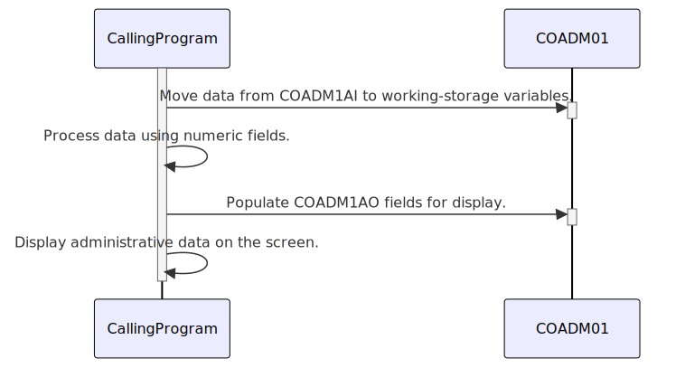

Gerado em: 1 de outubro de 2024
Descrição Resumida:
Este documento descreve o copybook COBOL COADM01.CPY, que define estruturas de dados para lidar com informações administrativas, incluindo títulos de tela, nomes de programas, opções de menu e mensagens de erro. Ele enfatiza a representação dupla de dados para processamento interno eficiente e exibição amigável ao usuário.
Histórias do Usuário: Como desenvolvedor, preciso de uma maneira padronizada de gerenciar e exibir informações administrativas em diferentes telas e módulos do aplicativo CardDemo. Isso garante uma experiência consistente ao usuário e simplifica o desenvolvimento, fornecendo estruturas de dados reutilizáveis.
Épico Relacionado: 9 - Utilitários do Sistema
Requisitos Técnicos:
Estruturas de Dados:
COADM1AI: Define campos de dados administrativos em um formato numérico compacto (COMP) para processamento interno eficiente dentro do programa COBOL.COADM1AO: Redefine COADM1AI para representar os mesmos dados em um formato baseado em caracteres adequado para exibição em telas ou relatórios. Esta estrutura usa campos de caracteres (PIC X) para legibilidade do usuário.Mapeamento de Campo:
COADM1AI possui um campo correspondente em COADM1AO com a mesma finalidade, mas um tipo de dado diferente. Por exemplo, TRNNAMEL (numérico) mapeia para TRNNAMEO (alfanumérico).Tipos e Tamanhos de Dados:
COMP) em COADM1AI são provavelmente definidos com PIC S9(n) para armazenar números com sinal de forma eficiente.PIC X(n)) em COADM1AO são usados para armazenar dados de caracteres, como títulos de tela e opções de menu.Atributos Visuais (Possível Integração BMS):
COADM1AO terminando com ‘C’, ‘P’, ‘H’, ‘V’, ‘O’ (por exemplo, TRNNAMEC, TITLE01P) sugerem integração com o Basic Mapping Support (BMS) para controlar atributos visuais como cor, destaque e posicionamento na tela.Modelos Relacionados
Configurações:
Melhorias de Código:
TRANSACTION-NAME em vez de TRNNAMEL) para melhorar a legibilidade.Melhorias de Segurança:
Diagrama Conceitual:
–Made by “Smart Engineering” (by Compass.UOL)–